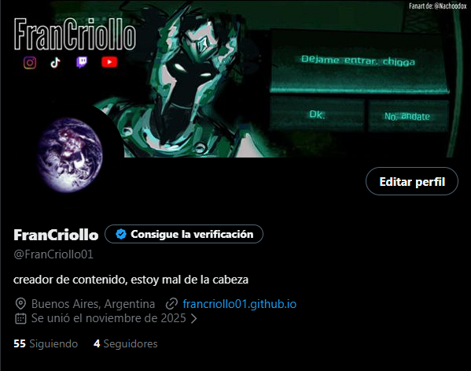
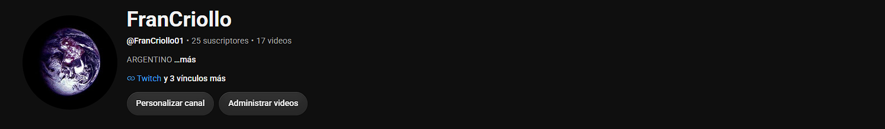

Twitter / X
Ir a Twitter
Twitch
Ir a TwitchYouTube
Ir a YouTube
Video
interesante:
TikTok
Ir a TikTokEspecificaciones de mi PC:
- CPU: AMD Ryzen 7 5700G
- GPU: AMD Radeon RX 6600 XT AsRock
- RAM: 2x 8 GB DDR4 (dual channel)
- Almacenamiento:
- SSD: Hiksemi Wave 480 GB
- HDD: 500 GB (Lo encontre en la calle)
- Motherboard: Gigabyte A520M K V2
- Fuente: LNZ ZX750-GZ 750W
- Gabinete: LNZ Y10 ARGB
- Perifericos:
- Monitor: HKC ANTTEQ F2145M 21,45" 75Hz
- 2do """Monitor""": Tablet PCBOX PCB-T103 Curi Lite (conectada con Spacedesk mediante USB)
- Teclado: Redragon K551RGB-1 V2 Mitra
- Mouse: Redragon M724-1K King
- Auriculares: Genericos Noga
Consolas
- Nintendo Wii
- PS4 Slim
Datos sobre mí
- Soy muy patriota, soy argentino y me encanta, yo muero por este país.
- Me encanta el futbol (soy un asco pero me encanta).
- Mi serie favorita es Arcane, seguida por Game of Thrones y Chernobyl.
- Mi juego favorito es Minecraft, seguido por Victoria 2 y The Last of Us (el uno).
- Superheroe favorito Spider-Man.
- Banda favorita Imagine Dragons, seguido por Fleetwood Mac y Laufey :).
- Me encanta todo lo relacionado al universo (Planetas, estrellas, galaxias, lunas, agujeros negros, etc)